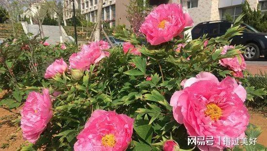
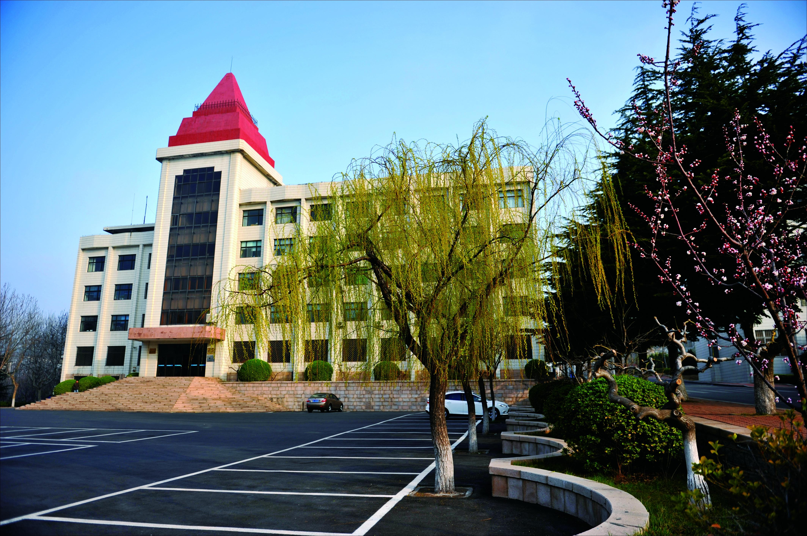

春日的校园，是被春风唤醒的诗行。清晨的薄雾还未完全散去，阳光便透过香樟树的枝叶，在石板路上洒下细碎的金斑。沿着主路漫步，两侧的玉兰花早已缀满枝头，粉白的花瓣带着晨露的清甜，风一吹便簌簌落下，铺成一条柔软的花径。人工湖畔的垂柳抽出了嫩黄的新芽，柳条垂在水面上，轻轻拂过泛起涟漪的湖面，惊起几只嬉戏的锦鲤。湖边的草坪上，蒲公英举着白色的绒球，三叶草在风中舒展着叶片，偶尔有几只麻雀落在枝头，叽叽喳喳地唱着春日的歌。午后的阳光最是温柔，坐在樱花树下的长椅上，看花瓣随风飘落，落在肩头、落在书页间，连空气里都弥漫着淡淡的花香。傍晚时分，夕阳把天空染成橘红色，校园里的建筑被镀上一层暖金色，归巢的鸟儿掠过天际，给这春日的校园添了几分静谧与温柔。
校园的春日，藏在每一个角落的生机里。实验楼前的海棠花团锦簇，粉艳的花朵缀满枝头，像一团团燃烧的云霞；图书馆旁的迎春花早已谢去，取而代之的是满墙的蔷薇，嫩绿的藤蔓爬满了墙面，星星点点的花苞在风中摇曳，等待着绽放的时刻。操场边的梧桐树抽出了新叶，嫩绿的叶片在阳光下闪着光，给奔跑的同学们撑起一片阴凉。就连教学楼的窗台，也被同学们摆上了多肉、绿萝，小小的盆栽里，是春日里蓬勃的生命力。春日的校园，是一幅流动的画，每一处风景都藏着青春的气息，每一缕风都带着希望的味道，让每一个身处其中的人，都能感受到生命的美好与蓬勃。

